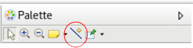
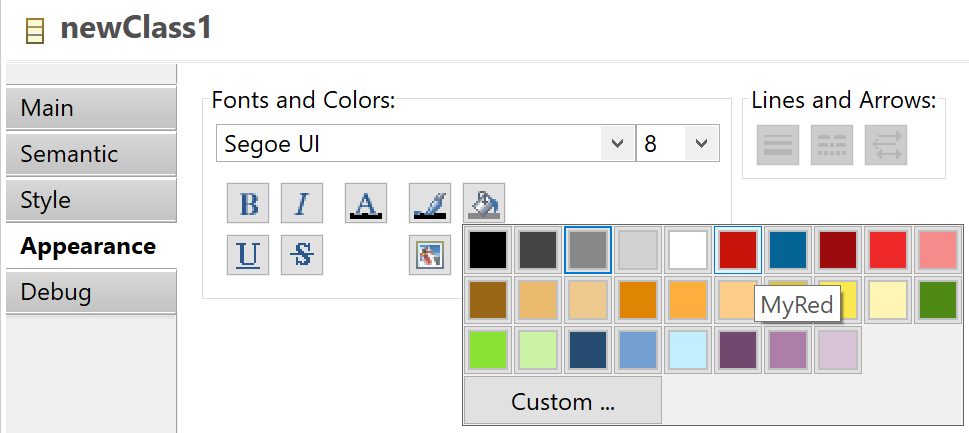

This document contains the release notes for recent major releases of Sirius. See also the release notes from previous versions for details about older releases.
Sirius 6.0.2 fixes an
important issue which is present in all previous versions of Sirius but only manifests itself under Windows and when using Eclipse SimRel 2018-09 or later (technically, the bug appear when using Sirius with JFace 3.14.100 or later). The symptom is that the
Model Explorer view fails to initialize with an error message about a
ClassCastException.
Sirius 6.0.1 is a service release which contains only important bug fixes compared to version 6.0.0.
Note: The new (and still experimental) Workflow and Server features depend on a specific version of Eclipse Jetty which is available in the main Eclipse Photon repository. They can not be used under Oxygen (which include older and incompatible versions of Jetty).


OperationCanceledException with a message containing the specific key word "
-RT-" has now a specific behavior. In this case, the
OperationCanceledException is rethrown to rollback the command if this Java service is called from an AQL expression or through the service interpreter. You can refer to
bugzilla 531487 for more details.
bot.viewByTitle (like “Problems” or “Error Log”) may not work anymore. Use
bot.viewByPartName instead.
org.eclipse.swtbot.swt.finder.widgets.AbstractSWTBot.contextMenu(String) raise a
WidgetNotFoundException instead of a
TimeoutException.
org.eclipse.sirius.tests.swtbot.support.utils.dnd.DndUtil has been updated to be compatible with Oxygen and Photon platforms. Some methods may not work anymore on Neon platform.
org.eclipse.sirius.ui.tools.api.actions.export.ExportAction.execute and
org.eclipse.sirius.ui.tools.api.actions.export.ExportAction.createImageFiles, do not open UI Dialogs anymore. It throws an
java.lang.reflect.InvocationTargetException that wraps the real cause of the error (
org.eclipse.sirius.ui.tools.api.actions.export.SizeTooLargeException or
java.lang.OutOfMemoryError). Callers have to handle properly the exception.
org.eclipse.sirius.diagram.ui.tools.api.part.DiagramEditPartService.isTooBig, can now handle very large images that previously leads to incorrect exports.
org.eclipse.sirius.ext.jface.viewers.IToolTipProvider is not used anymore to provide a tooltip on diagram element decorations defined in the VSM. The tooltip is defined directly with an interpreted expression on
GenericDecorationDescription,
MappingBasedDecoration and
SemanticBasedDecoration.
org.eclipse.sirius.common
org.eclipse.sirius.common.tools.api.interpreter.IExpressionProposal and its only implementation
DefaultExpressionProposal (in the same package) have been removed. They were not used anywhere, expression completion API is actually defined in package
org.eclipse.sirius.common.tools.api.contentassist which has its own types.
org.eclipse.sirius
org.eclipse.sirius.business.api.componentization.ViewpointRegistry.reloadAllFromPlugins() has been added to reload, from the runtime, all the VSMs of installed plug-ins and have the effect dynamically in the runtime.
org.eclipse.sirius.business.api.componentization.ViewpointRegistryImpl() has been moved to
org.eclipse.sirius.business.internal.componentization package.
contribution metamodel, which lived in package
org.eclipse.sirius.description.contribution, has been removed. It corresponded to an experimental feature which has been abandonned long ago.
DRefreshable.refresh() EOperation has been removed from the metamodel, along with all its implementations. Client code that needs the functionality can use either
DialectManager.refresh() for
DRepesentations or the new
org.eclipse.sirius.diagram.tools.api.command.view.RefreshSiriusElement.refresh(DRefreshable) static method for diagram elements (
DRefreshable.refresh() was a no-op for elements of other dialects).
org.eclipse.sirius.viewpointSpecificationModel extension point has been removed. It was part of the same experimental feauture and not actually used in practice.
org.eclipse.sirius.business.api.session.danalysis.DAnalysisSessionHelper, the method
getViewpointSelection() has been removed. It used an internal type as argument which has also been removed.
org.eclipse.sirius.business.api.helper.SiriusResourceHelper, the method
getCorrespondingViewpoint(Session session, URI, boolean) has been removed. It was not used anywhere, the real one is
getCorrespondingViewpoint(Session, Viewpoint) in the same class.
org.eclipse.sirius.business.api.dialect.DialectServices (and all its implementations), the method
refreshEffectiveRepresentationDescription(DRepresentation, IProgressMonitor) has been removed. It corresponded to an experimental feature which has been abandonned long ago.
org.eclipse.sirius.diagram
org.eclipse.sirius.diagram.tools.api.preferences.SiriusDiagramPreferencesKeys.PREF_DISPLAY_GENERIC_EDGE_CREATION_TOOL has been added to make to possible to hide the new generic edge creation tool. See the
User-Visible Changes or the user documentation for more details.
org.eclipse.sirius.diagram.ui
org.eclipse.sirius.diagram.ui.tools.api.editor.tabbar.AbstractTabbarContributor.createStraightenContribution() has been added to make accessible the creation of the Straighten To tabbar contribution item.
org.eclipse.sirius.diagram.ui.customLayoutAlgorithmProvider extension point has been added. It allows to contribute layout algorithms that can be configured directly in the VSM. This extension point comes with the following classes as API:
org.eclipse.sirius.diagram.ui.api.layout.CustomLayoutAlgorithmProvider,
org.eclipse.sirius.diagram.ui.api.layout.CustomLayoutAlgorithm,
org.eclipse.sirius.diagram.ui.api.layout.EnumChoice and
org.eclipse.sirius.diagram.ui.api.layout.LayoutOptionFactory.
org.eclipse.sirius.ui
org.eclipse.sirius.ui.business.api.viewpoint.ViewpointSelectionDialog has been removed.
org.eclipse.sirius.tests.junit.support
org.eclipse.sirius.tests.support.api.TestsUtil.isBeforeOxygenPlatform() has been added to detect if the current platform corresponds to a version before Oxygen.
String parameter has been added to the method
org.eclipse.sirius.tests.support.api.TestsUtil.setTargetPlatform(). This new parameter corresponds to the plug-in name from where the tests are currently launched (for example
org.eclipse.sirius.tests.swtbot.Activator.PLUGIN_ID). It avoids to build a wrong target platform containing each Sirius plug-ins twice.
org.eclipse.sirius.tests.swtbot.support
org.eclipse.sirius.tests.swtbot.support.utils.dnd.DndUtil#dragAndDrop(AbstractSWTBot<? extends Widget>, AbstractSWTBot<? extends Widget>) has been removed. When explicit drop coordinates are not needed, use the standard SWTbot
org.eclipse.swtbot.swt.finder.widgets.AbstractSWTBot.dragAndDrop(AbstractSWTBot<? extends Widget>) method instead.
org.eclipse.sirius
org.eclipse.sirius.business.api.query.SiriusReferenceFinder.of(EObject) has been added to provide an easy way to get the
SiriusReferenceFinder from an
EObject in the Sirius
Session.
org.eclipse.sirius.business.api.query.SiriusReferenceFinder.getReferencingSiriusElements(Collection<EObject>, SearchScope). The SearchScope.LOADED_REPRESENTATIONS_SCOPE scope covers the search and result scope. Then, no additional resource will be loaded using this scope.
org.eclipse.sirius.diagram.ui
PREF_SCALE_DIAGRAMS_ON_EXPORT from
org.eclipse.sirius.diagram.ui.tools.api.preferences.SiriusDiagramUiPreferencesKeys is now deprecated. User should use new preference
org.eclipse.sirius.ui.business.api.preferences.SiriusUIPreferencesKeys:
PREF_SCALE_LEVEL_DIAGRAMS_ON_EXPORT.
margin has been added in
org.eclipse.sirius.diagram.ui.business.api.DiagramExportResult. This attribute indicates what margin has been used to produce a white frame during diagram export. This attribute is available from the getter
getMargin(). A new constructor is also available to pass on the margin
org.eclipse.sirius.diagram.ui.business.api.DiagramExportResult.DiagramExportResult(DDiagram, double, int, Collection<IPath>).
SiriusDiagramUiPreferencesKeys.PREF_SCALE_DIAGRAMS_ON_EXPORT, you must replace this override by an override of the new preference
SiriusUIPreferencesKeys.PREF_SCALE_LEVEL_DIAGRAMS_ON_EXPORT. Example:
SiriusEditPlugin.getPlugin().getPreferenceStore().setDefault(SiriusUIPreferencesKeys.PREF_SCALE_LEVEL_DIAGRAMS_ON_EXPORT.name(),0);
org.eclipse.sirius.ui
org.eclipse.sirius.ui.business.api.preferences.SiriusUIPreferencesKeys:
PREF_SCALE_LEVEL_DIAGRAMS_ON_EXPORT. It is used to control the scaling level behavior when exporting diagrams. Refer to the JavaDoc for the details.
org.eclipse.sirius.ui.business.api.dialect.ExportFormat has a new attribute representing the scaling level to use for diagram export. It is defined by an integer type. Refer to the JavaDoc for details on its meaning.
org.eclipse.sirius.tests.junit.support
SiriusTestCase.loadModeler(URI, EditingDomain) allows to load the VSM at the specified URI and register all its Viewpoints in the current testcase. There is a new method,
org.eclipse.sirius.tests.support.api.SiriusTestCase.loadModeler(URI, EditingDomain, boolean), to allow to load the VSM at the specified URI without registering its viewpoints. It can be useful to load a VSM for an editing domain of another session than the current session of the
testcase.
org.eclipse.sirius.ext.gmf.runtime.gef.ui.figures.SiriusDefaultSizeNodeFigure has been added in plugin
org.eclipse.sirius.ext.gmf.runtime. The goal of the class is to workaround a
GMF bug. So if you have created class which inherits from
org.eclipse.gmf.runtime.gef.ui.figures.DefaultSizeNodeFigure, you must now use the new
SiriusDefaultSizeNodeFigure instead.
uid to all instances of type DRepresentation. This
uid is used to reference the DRepresentation from the DRepresentationDescriptor.
DRepresentationDescriptor.repPath has been changed to have
uid as fragment. The corresponding version, stored in attribute version of viewpoint:DAnalysis of the aird file, is
12.1.0.201707281200.
See this document for the complete list of message keys added or removed in Sirius 5.0.
A new mode (currently experimental) is available to load representations on demand and not during session opening. This feature implies to serialize Sirius representations in separate resources. This mode can be activated by setting the system property
createLocalRepresentationInSeparateResource at true. For more detail, see the developer documentation:
Representations lazy loading (experimental).
org.eclipse.sirius
org.eclipse.sirius.business.api.session.Session interface to retrieve the session an arbitrary
EObject is part of:
Optional<Session> s = Session.of(myObject);. It returns a
java.util.Optional<Session> so all the usual patterns apply, e.g.
Session.of(obj).ifPresent(s -> doSomething(s));.
org.eclipse.sirius.viewpoint.DRepresentationDescriptor.isLoadedRepresentation() has been added to know if the representation linked with this {@link DRepresentationDescriptor} is loaded. By default, all representations are held in the same resource than the DRepresentationDescriptor, in that case the method will always return true.
org.eclipse.sirius.business.api.session.danalysis.DAnalysisSession.allAnalyses() has been added in the interface to reflect the already existing
org.eclipse.sirius.business.internal.session.danalysis.DAnalysisSessionImpl.allAnalyses() implementation.
org.eclipse.sirius.business.api.dialect.DialectManager.getLoadedRepresentations(EObject, Session) has been added to get all loaded representations in the given session with the given EObject as target.
org.eclipse.sirius.business.api.dialect.DialectServices.getAllLoadedRepresentations(Session) has been added to get all loaded representations in the given session.
org.eclipse.sirius.business.api.helper.SiriusUtil.REPRESENTATIONS_FOLDER_NAME constant has been added. This is the default folder where representations file (*.srm) are located if the system property “createLocalRepresentationInSeparateResource” is set at true.
org.eclipse.sirius.tools.api.command.ui.UICallBack.shouldDeleteRepresentation(Set<DRepresentationDescriptor>) has been added to be called when the user interface should prompt for a choice about the representation deletion.
org.eclipse.sirius.business.api.query.SiriusReferenceFinder and
org.eclipse.sirius.business.api.query.EObjectQuery.getSiriusReferenceFinder() method to get it have been added. This API allows getting the DRepresentations or DRepresentationElements that reference the provided semantic object. It also allows getting the DRepresentationDescriptor which associated DRepresentation is or contains elements that reference the provided semantic object. This API will be useful for
representation lazy loading as it may, in the future, not need to load all not yet loaded representations. For now, the use of this API will load all not loaded representations.
org.eclipse.sirius.business.api.dialect.DialectServices.getRepresentationDescriptors(EObject, Session) has been moved to
org.eclipse.sirius.business.api.dialect.DialectManager.
org.eclipse.sirius.business.api.dialect.DialectServices.getAllRepresentationDescriptors(Session) has been moved to
org.eclipse.sirius.business.api.dialect.DialectManager.
org.eclipse.sirius.business.api.dialect.DialectServices.getRepresentationDescriptors(RepresentationDescription, Session) has been moved to
org.eclipse.sirius.business.api.dialect.DialectManager.
getRepresentationDescriptors(EObject, Session),
getAllRepresentationDescriptors(Session) and
getRepresentationDescriptors(RepresentationDescription, Session) have been removed from
AbstractRepresentationDialectServices. They are implemented in
DialectManagerImpl.
org.eclipse.sirius.business.api.dialect.DialectServices.getRepresentations(EObject, Session) has been moved to
org.eclipse.sirius.business.api.dialect.DialectManager
org.eclipse.sirius.business.api.dialect.DialectServices.getAllRepresentations(Session) has been moved to
org.eclipse.sirius.business.api.dialect.DialectManager
org.eclipse.sirius.business.api.dialect.DialectServices.getRepresentations(RepresentationDescription, Session) has been moved to
org.eclipse.sirius.business.api.dialect.DialectManager
getRepresentations(EObject, Session),
getAllRepresentations(Session) and
getRepresentations(RepresentationDescription, Session) have been removed from
AbstractRepresentationDialectServices. They are implemented in
DialectManagerImpl.
org.eclipse.sirius.common
org.eclipse.sirius.common.tools.api.util.LazyCrossReferencer.setEObjectToBeIgnored(Predicate<EObject>) has been added to filter inverse references to prevent some references resolution.
org.eclipse.sirius.common.tools.api.util.WorkspaceUtil.getFilesFromWorkspace(Collection<IProject>, String) signature has been modified in
getFilesFromWorkspace(Collection<IContainer>, String) to be more generic.
org.eclipse.sirius.diagram
org.eclipse.sirius.diagram.business.api.query.DDiagramQuery. This query,
getAllActivatedLayers, returns all the activated layers (transient or not) of the given diagram. It should replace
DDiagram.getActivatedLayers in several cases if you directly use it.
org.eclipse.sirius.diagram.ui
org.eclipse.sirius.diagram.ui.tools.api.preferences.SiriusDiagramUiPreferencesKeys:
PREF_SCALE_DIAGRAMS_ON_EXPORT,
PREF_MAXIMUM_EXPORT_BUFFER_SIZE,
PREF_MAXIMUM_EXPORT_BUFFER_SIZE_WINDOWS. They are used to control the auto-scaling behavior when exporting diagrams. Refer to the JavaDoc for the details.
org.eclipse.sirius.diagram.ui.tools.api.part.DiagramEditPartService, two new methods have been added:
setAllowDownScaling(boolean): when auto-scaling is enabled (which is controlled by the already existing
setAutoScalingEnabled()), this is used to control if down-scaling is allowed or not.
getScalingFactor(): after the export has been performed, this can be used to obtain the scaling factor that was effectively used.
org.eclipse.sirius.diagram.ui.business.api.DiagramExportResult has been added, which inherits from
ExportResult. It is returned by the
DialectManager.exportWithResult() methods when the representation exported is a diagram, and in addition to the information provided by
ExportResult gives access to the scaling factor that was used when exporting the diagram.
org.eclipse.sirius.diagram.ui.tools.api.preferences.SiriusDiagramUiPreferencesKeys.PREF_SHOW_SYNCHRONIZE_STATUS_DECORATOR has been added to say if the
synchronize status decorator must be shown or not.
checkShapesIntersect() has been added in
org.eclipse.sirius.diagram.ui.business.api.query.ConnectionEditPartQuery to check if source and target of the connection intersect (only intersect – not one contained in another).
org.eclipse.sirius.ext.emf.edit
org.eclipse.sirius.ext.emf.edit.EditingDomainServices does not use
Collection anymore as return type or parameter type in its services.
java.util.Collection has been replaced by
java.util.List. As mentioned in the
specifier documentation, it is recommended to use List or Set instead of Collection in java services signature.
org.eclipse.sirius.ui
org.eclipse.sirius.ui.tools.api.dialogs.AbstractExportRepresentationsAsImagesDialog a new method
isAutoScaleDiagram() has been added to indicate (once the dialog has been closed) if the user has requested to enable auto-scaling on diagram export.
org.eclipse.sirius.ui.tools.api.actions.export.ExportAction, a new method
setAutoScaleDiagram(boolean) to ask for automatic scaling of diagrams on export.
org.eclipse.sirius.ui.business.api.dialect.DialectUIServices, two new methods
exportWithResult() have been added. They are equivalent to the existing
export() methods (which return
void) except that they return an instance of the new type
org.eclipse.sirius.ui.business.api.dialect.ExportResult. This gives access to the list of all the actual files produced by the export operation. Note that in the case of the diagram dialect,
exportWithResult() actually returns a more specific
DiagramExportResult with additional diagram-specific information.
org.eclipse.sirius.ui.business.api.dialect.ExportFormat has a new attribute representing the scaling policy to use for diagram. It is defined by a new enumerated type
ExportFormat.ScalingPolicy which can have four different values:
WORKSPACE_DEFAULT,
AUTO_SCALING,
NO_SCALING,
AUTO_SCALING_IF_LARGER. Refer to the JavaDoc for details on their meanings.
org.eclipse.sirius.ui.tools.api.wizards.CreateEMFModelWizard is a new wizard that can be invoked to create instances of any metamodel. It will ask the end-user for a metamodel (
EPackage), a concrete type to instanciate as root element, and finally the local path of the file to create. See the class Javadoc for sample usage. Note that the first two pages of the wizard (EPackage and root type selection) can be customized through the
org.eclipse.sirius.common.package_meta_data extension point to provide user-oriented name and documentation for an EPackage, and to suggest specific EClasses as good root candidates.
org.eclipse.sirius.ui.tools.api.command.AbstractSWTCallback.shouldDeleteRepresentation(Set<DRepresentationDescriptor>) default implementation has been added to prompt the confirm dialog.
org.eclipse.sirius.ui.business.api.session.SessionEditorInput.SessionEditorInput(URI, URI, String, Session) has been added to provide the
DRepresentationDescriptor URI to retrieve the
DRepresentation from the
DRepresentationDescriptor.getRepresentation() method instead of performing a direct load.
org.eclipse.sirius.ui.editor
org.eclipse.sirius.ui.editor.api.pages. They are the following:
AbstractSessionEditorPage,
PageProvider,
PageUpdateCOmmand,
PositioningKind,
PageUpdateCommandFactory. These classes allow to provide custom pages to session editor instances.
org.eclipse.sirius.ui.editor.sessionEditorPageProvider has been added to allow custom page providing for session editor instances.
Sirius 5.0.1 is a maintenance release with only bugfixes and small tweaks to the UI of the aird editor.
package::Class syntax for domain classes and type names in the VSM is now fully supported and the new default. It means this syntax is interpreted by Sirius and completion is provided for it when the first
: character is entered. The legacy syntax
package.Class is still supported for compatibility.
See this document for the complete list of message keys added or removed in Sirius 5.0.
org.eclipse.sirius.common
org.eclipse.sirius.common.tools.api.util.SiriusCrossReferenceAdapterImpl.setFeatureToBeCrossReferencedWhiteList(Collection<EReference>) to set a white list of references that must be referenced even if the reference is derived.
org.eclipse.sirius.common.tools.api.util.SiriusCrossReferenceAdapterImpl.isIncluded(EReference) has been overridden to consider features in the white list.
org.eclipse.sirius.common.package_meta_data has been added. It can be used to associate user-oriented meta-data to Ecore metamodels, identified by their
nsURI: a user-oriented name/label (as opposed to the technical nsURI), a (short) description/documentation, and a list of suggested EClasses defined in the EPackage that are good candidates as root model elements. These meta-data are currently used only in the generic model creation wizard integrated in the aird editor.
org.eclipse.sirius.common.ui
org.eclipse.sirius.common.ui.tools.api.dialog.FeatureEditorDialog class has been removed; use the
org.eclipse.emf.edit.ui.celleditor.FeatureEditorDialog equivalent provided by EMF directly instead.
org.eclipse.sirius
createRepresentationInSeparateResource=true. That means all new representations will be saved, when this property is enabled, in a separate file with
*.srm extension.
org.eclipse.sirius.business.api.dialect.DialectServices.canCreate(EObject, RepresentationDescription, boolean) has been added to better control the checks done by already existing
org.eclipse.sirius.business.api.dialect.DialectServices.canCreate(EObject, RepresentationDescription) method. The new boolean allow to deactivate the check verifying that the viewpoint of the given description must be activated so the method can return true.
org.eclipse.sirius.viewpoint.description.DAnnotation.references feature has been added. It allows to have some information without having to search them into the entire model of the Sirius session. Ideally only elements from semantic resources of the session should be referenced or else it may broke the session behavior either because resolving too soon EObject in the session or because adding a resource that is not known by Sirius session.
org.eclipse.sirius.business.api.query.EObjectQuery.getImpactedRepDescriptorFromDAnnotationData() method has been added to help retrieve the
DRepresentationDescriptors which owned
DAnnotation are referencing a given
EObject with
DAnnotation.references.
org.eclipse.sirius.viewpoint.DRepresentationDescriptor#repPath attribute has been added to hold the representation path since the
org.eclipse.sirius.viewpoint.DRepresentationDescriptor#representation feature is derived. This attribute is not intended to be modified by client. You should use
org.eclipse.sirius.viewpoint.DRepresentationDescriptor.setRepresentation(DRepresentation) or
org.eclipse.sirius.viewpoint.DRepresentationDescriptor.updateRepresentation(DRepresentation) instead.
org.eclipse.sirius.viewpoint.DRepresentationDescriptor.updateRepresentation(DRepresentation) has been added to update the repPath attribute according to the given representation. This method is intended to be called if the representation instance is still the same but requires to recompute the repPath.
org.eclipse.sirius.business.api.query.FileQuery.isSrmFile() has been added to indicate if the file extension is dedicated to a file containing representations.
org.eclipse.sirius.dRepresentationLocationRule extension point has been added to customize the resource location of new representations. See
Provide representation location rule (experimental) for more details.
org.eclipse.sirius.business.api.session.danalysis.DRepresentationLocationRule interface has been added to provide a customized rule to the
org.eclipse.sirius.dRepresentationLocationRule extension point.
org.eclipse.sirius.business.api.helper.SiriusUtil.REPRESENTATION_FILE_EXTENSION constant has been added to reference the new *.srm extension.
org.eclipse.sirius.business.api.session.Session.getSrmResources() has been added to provide the list of representation resources (serialized as *.srm files by default).
org.eclipse.sirius.business.api.query.ResourceQuery.isAirdOrSrmResource() has been added to know whether the resource is a srm resource (
org.eclipse.sirius.business.api.query.ResourceQuery.isSrmResource()) or an aird resource.
org.eclipse.sirius.business.api.query.ResourceQuery.isSrmResource() has been added to know whether the resource contains a
DRepresentation as root element.
org.eclipse.sirius.diagram.ui.tools.api.migration.DiagramCrossReferencer.DiagramCrossReferencer(Collection<Resource>) constructor has been added to compute the cross references on a list of resources.
org.eclipse.sirius.modelOperationManager extension point has been addded. It allows the contribution of new types of
Model Operations which are then usable in modeler definitions (
*.odesign).
org.eclipse.sirius.viewpoint.DRepresentationDescriptor#representation feature is now derived, transient and volatile. The representation is compute by using the
org.eclipse.sirius.viewpoint.DRepresentationDescriptor#repPath attribute.
org.eclipse.sirius.business.api.query.DViewQuery.getAllContentInRepresentations(Predicate<? super EObject>) now takes a
java.util.Predicate (from Java 8) as argument instead of a
com.google.common.base.Predicate.
org.eclipse.sirius.ui.modelingprojectresourcelistener is no longer expected to be used. It is an internal extension point. Clients using this extension point to ignore some files as potential semantic models must now use the extension point
org.eclipse.sirius.resourceStrategy. This extension point existed before Sirius 5.0.0 but was not API. It becomes API with Sirius 5.0.0, see the
developer documentation for more details.
boolean isPotentialSemanticResource(IFile) and
boolean isLoadableModel(IFile, Session) of class
org.eclipse.sirius.ui.tools.api.views.modelexplorerview.resourcelistener.DefaultModelingProjectResourceListener, you can now create a
resourceStrategy of type
org.eclipse.sirius.business.api.resource.strategy.ResourceStrategy.ResourceStrategyType.SEMANTIC_RESOURCE and respectively override
boolean isPotentialSemanticResource(URI) and
boolean isLoadableModel(URI,Session). As a reminder, to get an URI from an IFile, you can use:
URI.createPlatformResourceURI(iFile.getFullPath().toString(), true). And to get an IFile from an URI, you can use:
ResourcesPlugin.getWorkspace().getRoot().getFile(new Path(uri.toPlatformString(true))).
boolean isRepresentationsModel(IFile) and
boolean isVsmModel(IFile) of class
org.eclipse.sirius.ui.tools.api.views.modelexplorerview.resourcelistener.DefaultModelingProjectResourceListener, they no longer exist. They correspond to core API and is not supposed to be overridden. They are accessible through API
org.eclipse.sirius.business.api.query.FileQuery.FileQuery(IFile).
org.eclipse.sirius.resourceStrategy are now APIs:
org.eclipse.sirius.business.api.resource.strategy.ResourceStrategyRegistry: Registry to have access to all overridable services through a
ResourceStrategy
org.eclipse.sirius.business.api.resource.strategy.ResourceStrategy: Interface implemented by all resource strategies
org.eclipse.sirius.business.api.resource.strategy.AbstractResourceStrategyImpl: Default implementation of above interface. All resource strategies contributed with the extension need to extend it.
org.eclipse.sirius.business.api.resource.strategy.LegacyReleaseResourceStrategyImpl (previously named
DefaultResourceStrategyImpl): A resource strategy with the code used before the optimization concerning the
org.eclipse.sirius.business.api.resource.strategy.ResourceStrategy.ResourceStrategyType.RELEASE_RESOURCE_AT_RESOURCESET_DISPOSE. It is not used but can be quickly contributed by someone that want the previous behavior (before Sirius 4.0.0 M6).
org.eclipse.sirius.business.api.control.SiriusUncontrolCommand with signature
SiriusUncontrolCommand(EObject, boolean, IProgressMonitor) has been removed; instead, use the alternate constructor with an additional explicit
boolean shouldEndBySaving parameter (set it to
true to obtain the same behavior as the removed constructor).
org.eclipse.sirius.business.api.dialect.DialectServices, methods
canCreateIdentifier and
createIdentifier have been removed.
org.eclipse.sirius.business.api.dialect.identifier package and all its content (
AbstractRepresentationElementIdentifier and
RepresentationElementIdentifier) have been removed.
org.eclipse.sirius.ui
org.eclipse.sirius.ui.business.api.viewpoint.ViewpointSelection.Callback:
selectViewpoint(Viewpoint, Session, boolean, Set<Viewpoint>, IProgressMonitor) and
deselectViewpoint(Viewpoint, Session, Set<Viewpoint>, IProgressMonitor). These methods add a new parameter that is a set of viewpoints compared to the same methods without these parameters. These set contains all viewpoints that will be deactivated/activated in addition of the one that is asked to be deactivated/activated. It allows the callback implementation to better handle viewpoint dependencies interaction by being able to know if missing dependencies will be activated or deactivated.
org.eclipse.sirius.ui.business.api.editor.ISiriusEditor has been added to gather
org.eclipse.sirius.ui.editor.SessionEditor and
org.eclipse.sirius.ui.business.api.dialect.DialectEditor under the same abstraction. It allows to provide
org.eclipse.sirius.ui.business.api.session.IEditingSession saving functionalities for session editor or any new editor that is not a dialect editor.
getSiriusEditors() has been added to interface
org.eclipse.sirius.ui.business.api.session.IEditingSession. It allows to retrieve all
org.eclipse.sirius.ui.business.api.editor.ISiriusEditor that are registered in the session.
org.eclipse.sirius.ui.business.api.dialect.DialectUIServices.refreshEditor(DialectEditor, IProgressMonitor) has been added to allow specifiers to do a full refresh of its dialect editor easily.
org.eclipse.sirius.ui.tools.api.color.VisualBindingManager.getDefaultFontWithRuntimeSizeAndFromLabelFormat(List<FontFormat>) has been added to allow to retrieve a font using the given format and the default Sirius font (arial) and the runtime height.
org.eclipse.sirius.ui.tools.api.color.VisualBindingManager.getFontFromNameAndLabelFormatAndWithDefaultSize(List<FontFormat>, String) has been added to allow to retrieve a font using the given format and the given font name and the runtime height.
org.eclipse.sirius.ui.tools.api.wizards.page.ViewpointsSelectionWizardPage.setBrowserMinWidth(int) has been added to allow modification of the minimum width (with default value “0”) of the browser part of the viewpoint selection wizard.
org.eclipse.sirius.ui.tools.api.wizards.page.ViewpointsSelectionWizardPage.setColumnWidthEquality(boolean) has been added to allow modification of column width equality (with default value “false”) of the root composite of the viewpoint selection wizard.
org.eclipse.sirius.ui.tools.api.color.VisualBindingManager.getDefaultFontWithRuntimeSizeAndFromLabelFormat(List<FontFormat>) has been added to allow to retrieve a font using the given format and the default Sirius font (arial) and the runtime height.
org.eclipse.sirius.ui.tools.api.color.VisualBindingManager.getFontFromNameAndLabelFormatAndWithDefaultSize(List<FontFormat>, String) has been added to allow to retrieve a font using the given format and the given font name and the runtime height.
org.eclipse.sirius.ui.tools.api.dialogs.AbstractExportRepresentationsAsImagesDialog.isExportDecorations() has been added to know if decorations are displayed in the exported image.
org.eclipse.sirius.ui.business.api.dialect.DialectUIServices.export(DRepresentation, Session, IPath, ExportFormat, IProgressMonitor, boolean) method has been added. Compared to the previous method signature, the boolean parameter
exportDecorations has been added to allow to choose if the diagram element decorations will be exported or not.
exportDecorations has been added to
org.eclipse.sirius.ui.tools.api.actions.export.ExportAction.ExportAction(Session, Collection<DRepresentation>, IPath, ImageFileFormat, boolean, boolean) constructor. It allows to choose if the diagram element decorations will be exported or not.
attachEditor(DialectEditor) from the interface
org.eclipse.sirius.ui.business.api.session.IEditingSession has its parameter type modified from
DialectEditor to the new abstraction
ISiriusEditor to provide saving capabilities with other editors than the dialect ones.
detachEditor(DialectEditor) from the interface
org.eclipse.sirius.ui.business.api.session.IEditingSession has its parameter type modified from
DialectEditor to the new abstraction
ISiriusEditor to provide saving capabilities with other editors than the dialect ones.
detachEditor(DialectEditor, boolean) from the interface
org.eclipse.sirius.ui.business.api.session.IEditingSession has its first parameter type modified from
DialectEditor to the new abstraction
ISiriusEditor to provide saving capabilities with other editors than the dialect ones.
org.eclipse.sirius.ui.tools.api.assist.TextContentProposalProvider.getContentContext(String, int) has been made protected instead of private to allow to use it for sub types.
org.eclipse.sirius.ui.tools.api.assist.TextContentProposalProvider.removeDuplicatedProposals(List<ContentProposal>) has been made protected instead of private to allow to use it in sub types.
org.eclipse.sirius.ui.tools.api.project.ModelingProjectManager.createLocalRepresentationsFile(IProject, IProgressMonitor) has its return type changed from
void to
Session to allow callers to have access to the newly created session directly.
org.eclipse.sirius.ui.tools.api.views.ViewHelper.getContentProvider() has been renamed into
createContentProvider() and now returns a new instance on each invocation.
org.eclipse.acceleo.ui.interpreter, which is available directly from the Sirius update-sites). The corresponding interface
org.eclipse.sirius.ui.tools.api.views.interpreterview.InterpreterView has been removed. Technically, the implementation code for the old
Model Request Interpreter view is still present if needed during the transition, but not exposed or used anywhere. It will be removed in a future version.
org.eclipse.sirius.diagram
org.eclipse.sirius.diagram.business.api.helper.decoration.DecorationHelper has been added. It provides
updateDecorations(List<Layer>) and
updateAllDecorations methods that allow to update only decorations in a diagram.
org.eclipse.sirius.diagram.business.api.refresh.IRefreshOverride.aroundRefresh(DDiagram) has been moved to
org.eclipse.sirius.diagram.business.api.refresh.IRefreshExtension to unify methods handling refresh extension under one interface.
org.eclipse.sirius.diagram.business.api.refresh.IRefreshExtension.aroundRefresh(DDiagram) has been modified with a default behavior that is the one before introduction of the method to avoid breaking compatibility.
org.eclipse.sirius.diagram.business.api.refresh.IRefreshOverride has been removed because its only method has been moved into
org.eclipse.sirius.diagram.business.api.refresh.IRefreshExtension interface
org.eclipse.sirius.diagram.business.internal.dialect.identifier package and all its content (
DiagramIdenttifier,
NodeIdentifier,
EdgeIdentifier,
NodeContainerIdentifier, and
NodeStyleIdentifier) have been removed.
org.eclipse.sirius.diagram.ui
org.eclipse.sirius.diagram.ui.business.api.query.ViewQuery.SPECIFIC_STYLES &
org.eclipse.sirius.diagram.ui.business.api.query.ViewQuery.VERTICAL_ALIGNMENT have been added to retrieve the initial label alignment of Notes from the Palette (see
user-visible changes ). Currently the vertical alignment can not be changed (potential new feature later).
org.eclipse.sirius.diagram.ui.graphical.edit.policies.SiriusDecoratorEditPolicy has been added to improve the behavior of decorator selection.
IDecorator to decorate EditPart in diagram. That allows Sirius to manage the relative positioning between decorations.
org.eclipse.sirius.diagram.ui.tools.api.decoration.SiriusDecorationDescriptorProvider represents a provider able to give the decoration descriptors.
org.eclipse.sirius.diagram.ui.tools.api.decoration.AbstractSiriusDecorationDescriptorProvider is an abstract class that can be inherited to implement
SiriusDecorationDescriptorProvider.
org.eclipse.sirius.diagram.ui.tools.api.decoration.DecorationDescriptor is a simple POJO that contains information needed to display decoration.
org.eclipse.sirius.diagram.ui.tools.api.decoration.SiriusDecorationProviderRegistry allows to register and get
SiriusDecorationDescriptorProvider.
SiriusDiagramUiPreferencesKeys.PREF_AUTHORIZE_DECORATION_OVERLAP has been added in
org.eclipse.sirius.diagram.ui.tools.api.preferences.SiriusDiagramUiPreferencesKeys. If true, the overlap is authorized between decoration group on diagram element.
org.eclipse.sirius.diagram.ui.provider.DiagramUIPlugin.Implementation.DynamicDiagramUIPreferences and the method
org.eclipse.sirius.diagram.ui.provider.DiagramUIPlugin.Implementation.getDynamicPreferences() have been added to have good performances in getting the preference value.
SiriusDiagramUiPreferencesKeys.PREF_PRINT_DECORATION has been added in
org.eclipse.sirius.diagram.ui.tools.api.preferences.SiriusDiagramUiPreferencesKeys. If true, the decorations of the diagram elements of a diagram will be printed, when printing a diagram.
org.eclipse.sirius.diagram.ui.tools.api.part.DiagramEditPartService.DiagramEditPartService class which can be used to export diagrams as images is now automatically adapting the output resolution for raster image based on maximum buffer size specified through the
plugin.propeties file of the
org.eclipse.sirius.diagram.ui plugin. This leads to a noticeable increase of the export image size (you can expect a 10 factor on small diagrams) and the method will no longer fail with OutOfMemory errors as bigger diagrams will lead to a lower output resolution. Implementers using this class can override the
DiagramEditPartService.getMaximumTotalSize() method to return their own limit or
DiagramEditPartService.getExportResolutionFactor(DiagramEditPart, SiriusDiagramImageGenerator) and return
1.0 to get back to the previous behavior.
org.eclipse.sirius.diagram.ui.tools.api.format.SiriusFormatDataManagerWithMapping that are
getFormatData(FormatDataKey, RepresentationElementMapping) and
addFormatData(FormatDataKey, RepresentationElementMapping, AbstractFormatData) have been moved into the interface
org.eclipse.sirius.diagram.ui.tools.api.format.SiriusFormatDataManager to reduce interface numbers for less complexity.
org.eclipse.sirius.diagram.ui.tools.api.format.SiriusFormatDataManagerWithMapping that are
getFormatData(FormatDataKey, RepresentationElementMapping) and
addFormatData(FormatDataKey, RepresentationElementMapping, AbstractFormatData) have been moved into the interface
org.eclipse.sirius.diagram.ui.tools.api.format.SiriusFormatDataManager to reduce interface numbers for less complexity.
getFormatData(FormatDataKey key) and
addFormatData(FormatDataKey key, AbstractFormatData formatData) have been removed from interface
org.eclipse.sirius.diagram.ui.tools.api.format.SiriusFormatDataManager because they were deprecated.
org.eclipse.sirius.diagram.ui.tools.api.format.SiriusFormatDataManagerWithMapping has been removed because all its methods have been moved into interface
org.eclipse.sirius.diagram.ui.tools.api.format.SiriusFormatDataManager
org.eclipse.sirius.diagram.ui.tools.api.decoration.AbstractSiriusDecorator is removed because now useless.
getFormatData(FormatDataKey key) and
addFormatData(FormatDataKey key, AbstractFormatData formatData) have been removed from interface
org.eclipse.sirius.diagram.ui.tools.api.format.SiriusFormatDataManager because they were deprecated.
org.eclipse.sirius.diagram.ui.tools.api.format.SiriusFormatDataManagerWithMapping has been removed because all its methods have been moved into interface
org.eclipse.sirius.diagram.ui.tools.api.format.SiriusFormatDataManager
org.eclipse.sirius.table
DTableElementSynchronizer
EClass has been removed from the table meta-model. It only defined
EOperations and has been replaced with an equivalent (internal) plain Java class.
org.eclipse.sirius.tree.ui
org.eclipse.sirius.tree.ui.tools.api.preferences.SiriusTreeUiPreferencesKeys has been added with the enum value
SiriusTreeUiPreferencesKeys.PREF_ALWAYS_USE_STANDARD_FONT_SIZE. This enum value is the preference when true allowing to use runtime font height when displaying Sirius tree editor’s items instead of the one specified in the VSM.
org.eclipse.sirius.ui.editor
This plugin is new in Sirius 5.0. It provides a session editor showing loaded models, representations and viewpoint activation status of the session. It has functionalities allowing to change the viewpoint activation status, to create/remove representations or to load unload external models. The graphical block showing loaded models is integrated with CNF. You can provide content extension to its viewer by using an id matching the pattern
org.eclipse.sirius.ui.editor.graphicalcomponents.semanticModelsViewer.contentExtension.*. You also can provide action extension by using an id matching the pattern
org.eclipse.sirius.ui.editor.graphicalcomponents.semanticModelsViewer.actionExtension.*. The extension will be selectable/unselectable by using a
Customize View button on the models block header.
org.eclipse.sirius.properties.core
org.eclipse.sirius.properties.core.internal.converter.ViewDescriptionConverter has been moved as an API to
org.eclipse.sirius.properties.core.api.ViewDescriptionConverter.
org.eclipse.sirius.properties.core.api.
org.eclipse.sirius.properties.core.internal.SiriusInterpreter has been moved as an API to
org.eclipse.sirius.properties.core.api.SiriusInterpreter. This class could be used by those who want to create custom model operations using the Properties framework.
org.eclipse.sirius.properties.core.api.SiriusDomainClassTester has been added as an API for those who want to create custom model operations using the Properties framework.
org.eclipse.sirius.ext.emf.edit.EditingDomainServices.createInstance(EClass) has been added to allow the creation of a new instance from an EClass in the interpreters.
org.eclipse.sirius.properties.defaultrules.
org.eclipse.sirius.ui.properties
org.eclipse.sirius.ui.properties to the newly created plugin
org.eclipse.sirius.properties.core. It includes all the APIs and both extension points.
org.eclipse.sirius.editor.properties
org.eclipse.sirius.editor.properties.sections.description.representationdescription the class
RepresentationDescriptionMetamodelsUpdater has been replaced by
DescriptionMetamodelsUpdater which can now be used with any EObject with a many-valued EReference to EPackages. The behavior of the class
RepresentationDescriptionMetamodelPropertySectionSpec has been transfered to an abstract class independent of
RepresentationDescription named
AbstractMetamodelPropertySectionSpec. Those classes are now used for the edition of the metamodels of both the Properties view description and the various representations.
org.eclipse.sirius.tests.junit.support
org.eclipse.sirius.tests.support.api.TestsUtil.setTargetPlatform() has been added to allow to load a PDE target platform according to all known OSGi bundles. It is useful to compile a plug-in in the execution runtime of the tests.
org.eclipse.sirius.tests.support.api.OpenedSessionsCondition has been extracted from a junit test to be used by multiple junit tests. It allows to wait until a session is in opened state.
org.eclipse.sirius.tests.swtbot.support
getTreeItem(SWTBotTreeItem[], String, boolean, boolean) has been added in
org.eclipse.sirius.tests.swtbot.support.utils to retrieve recursively a
SWTBotTreeItem in a
SWTBotTreeItem array. Compared to
getTreeItem(SWTBotTreeItem[], String), it adds the capability to control if the search must be done on enabled items or enabled and disabled items and if the tree must be expanded during the search to check non displayed items.
org.eclipse.sirius.tests.swtbot.support.api.editor.SWTBotSiriusDiagramEditor.dragCentered(String, Class<? extends EditPart>, int, int) improving the dragCentered method by adding the aimed Class in parameter.
mouseDragWithKey(int, int, int, int, int) in classes
org.eclipse.sirius.tests.swtbot.support.api.editor.SWTBotSiriusDiagramEditor,
org.eclipse.sirius.tests.swtbot.support.api.editor.SWTBotSiriusGefViewer and
org.eclipse.sirius.tests.swtbot.support.api.widget.SWTBotSiriusFigureCanvas. This allows to correctly wait the end of the drag’n’drop.
final AtomicBoolean dragFinished = new AtomicBoolean(false);
editor.dragWithKey(start.x, start.y, endpoint.x, endpoint.y, SWT.F3, dragFinished);
// Wait that the drag is done (the async Runnable simulating the
// drag)
bot.waitUntil(new ICondition() {
@Override
public boolean test() throws Exception {
return dragFinished.get();
}
@Override
public void init(SWTBot bot) {
}
@Override
public String getFailureMessage() {
return "The drag'n'drop operation has not finished.";
}
});
// Wait that the figures are redrawn. In a fast environment, figures
// are not really redrawn and the rest of the test is not reliable.
SWTBotUtils.waitAllUiEvents();